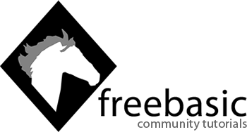

Community Tutorials

Tutorials submitted by the FreeBASIC community:
Getting Started
Getting Started with FreeBASIC
by
SJ Zero
Using libraries in FreeBASIC
by
SJ Zero
Using the Mouse in FreeBASIC
by MystikShadows
Get Information into your program
by
TekRat
Using Dynamic Arrays in FreeBASIC
by SephKnows
Beginners Guide to Types as Objects (Part 1)
by YetiFoot
Beginners Guide to Types as Objects (Part 2)
by YetiFoot
Introduction to Variable Scope
by
rdc
Introduction to Arrays
by
rdc
Introduction to the Type Def
by
rdc
New To Programming?
by The FB Community
Compiling a BIG QB program
by
Antoni
Game Programming
How to Program a Game: Lesson 1
by Lachie Dazdarian
Managing A High Score Table
by Lachie Dazdarian
Flow Control Statements
The IF Statement
by
rdc
The Select Case Statement
by
rdc
Pre Processor
Conditional Compilation And You
by AetherFox
Memory Management
Introduction to Pointers
by
rdc
Pointers, Data Types and Memory
by
rdc
The Pointer Data Type
by
rdc
Using Linked Lists
by Parker
Dynamic Arrays in Types
by
rdc
Intermediate Techniques
Introduction to Function Overloading in FreeBASIC
by
:stylin:
Mathematics
Different ways angles are measured
by RandyKeeling
A Brief Introduction To Trigonometry
by RandyKeeling
Windows API
Introduction to Message-Based Programming
by
rdc
Libraries
Interfacing with C
by UtenNavn
SDL_NET
by Paragon
Using FreeBASIC Built Libraries with GCC
by Jeff Marshall
Object Oriented Programming
Introduction to the Extended Type
by
rdc
Simulating Polymorphism
by
rdc
OOP in non-OOP languages
by KevinWhitefoot
Const Qualifiers and You
by notthecheatr
FBgfx
Creating and Understanding Your FBgfx Img and Font Buffer
by The FB Community